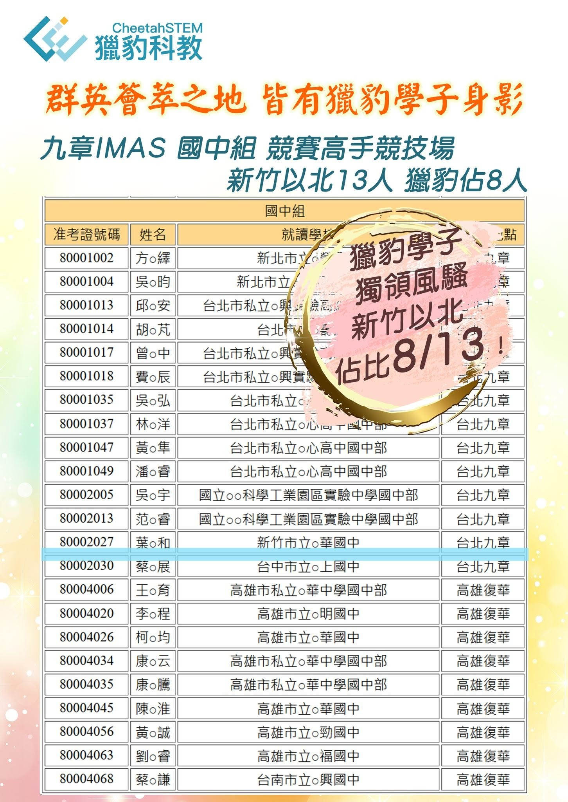

群英薈萃之地 皆有獵豹學子身影
九章IMAS 國中組 競賽高手競技場
新竹以北 13人 獵豹佔8‼️
九章數學競賽一直以來都是全台頂尖學生的指標戰場，尤其國中組，被許多人視為「未來高中科學班、數資班學生的預備名單」。能夠在這樣的舞台上被看見，代表學生不只是會解題，而是真正具備數學的深度、敏銳度與思考的高度。
真正的高手養成，絕非偶然，也不是短期衝刺能達成的。因此，獵豹即將推出【2025 FA00課程】，這不僅是一門備考高中科學班、數資班必學的課程，更提供了一個難以在其他地方找到的學習機會。通過獵豹七位頂尖名師的專業引導，學生將有機會拓展知識的深度與廣度，激發內在潛能。
參與FA00，學生將在激烈的科學班錄取戰中獲得堅實的能力，從而在競爭中脫穎而出。
FA00課程透過深度數學訓練和宏觀視角的啟發，旨在把學生從高手培養成頂尖高手，從Good升級至Excellent，確保在科學班/數資班的考試中取得傑出成績。
•科學班入學考的致勝關鍵是「數學」，今年(2025)建中 北一女 中一中 科學班初試最高分 皆為獵豹學子 ‼️
•多位「獵豹FA00」學子 在科學班初試中 都是數學的遙遙領先者‼️
•「獵豹FA00」不是猛刷考古題的內卷式課程，是能真正訓練你成為數學高手的課程❗️
•「獵豹FA00」是一個對你一生有益的數學課程❗️
•「獵豹FA00」引領風潮 開拓視野 培養科研能力 提升競爭力 」的菁英式課程‼️
我們從不以勤刷猛練猜中考古題而沾沾自喜，「獵豹FA00」屢屢以前瞻性的眼光命中新考題‼️
當大家還在為科學班入學考試奮鬥，獵豹已經在為持續的領先規劃藍圖！‼️
【獵豹2025 新版 FA00】請見
